Galeri & Portofolio Acara
Dokumentasi peran Agung Gumelar dalam perencanaan, tata panggung, manajemen kerumunan, dan eksekusi lapangan.
 Festival Musik
Festival Musik
Break Out Day 2024
Festival musik berskala besar dengan panggung terbuka, tata cahaya festival spektakuler, koordinasi alur penonton multi-ribu di venue Chandradimuka.
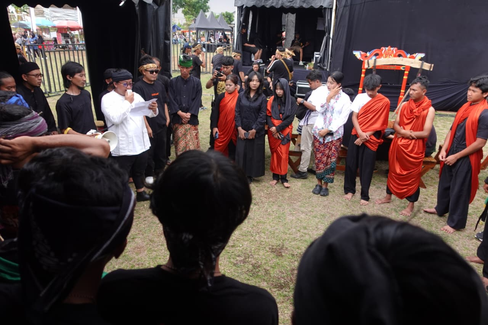
Festival BudayaNapak Jagat Pasundan 2026
Pagelaran seni kolosal dan kebudayaan akbar dengan manajemen tata panggung etnik kontemporer, lighting teatrikal, dan alur rundown sakral.
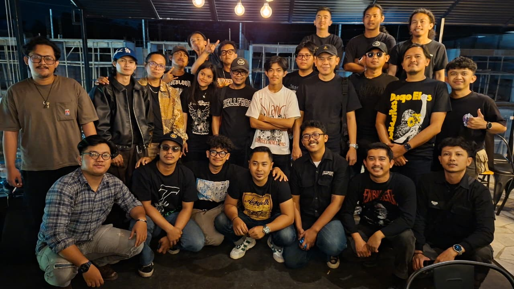
Festival MusikShout Of Sound 2026
Panggung musik konser berenergi tinggi dengan tata suara bertenaga (line array audio), visual lighting panggung megah, dan crowd control solid.
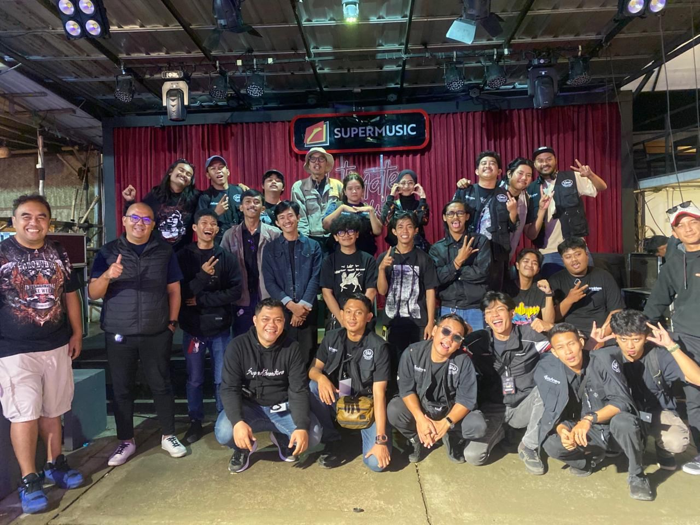
Intimate ConcertIntimate Show 2025
Konser musik eksklusif berkonsep intimate & akustik dengan interaksi hangat artis, tata lampu hangat, serta akustik audio presisi tinggi.
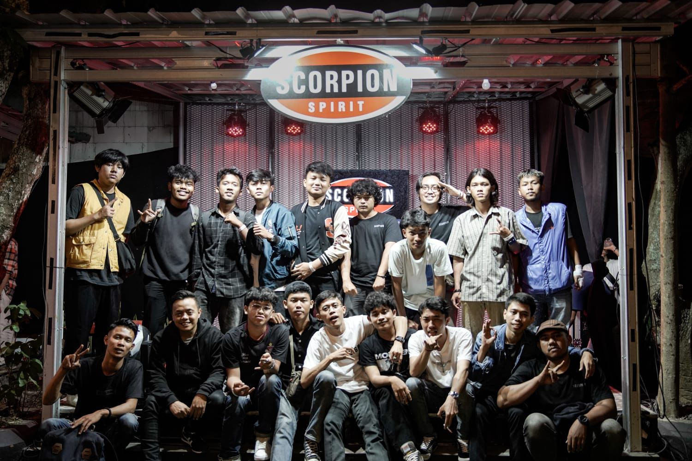
Live ShowcaseScorpion Spirit - Live Musik
Showcase live musik band independen dengan tata panggung kafe/venue indoor, dinamika lighting panggung, dan interaksi komunitas musik.
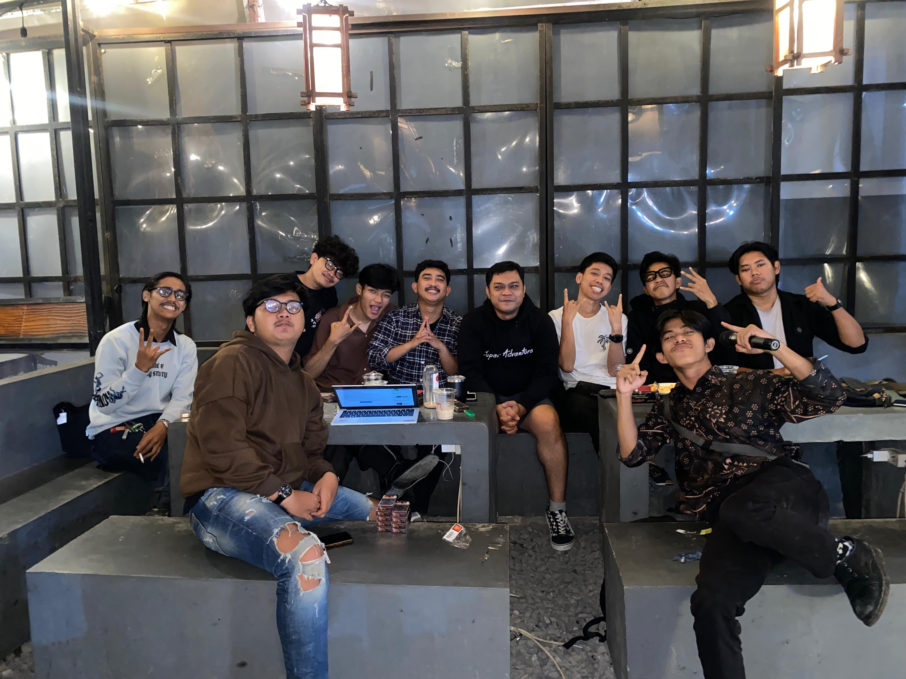
Music & LifestyleWeekend Vibes 2025
Perayaan akhir pekan memadukan panggung live performance musisi muda, food bazaar kuliner kreatif, dan ruang ekspresi anak muda.
 Brand Activation
Brand Activation
Coklat Kita Silaturahmi 2026
Program aktivasi merek strategis di tengah masyarakat pedesaan bersama tokoh adat & warga, menghadirkan interaksi budaya bernilai sosial tinggi.
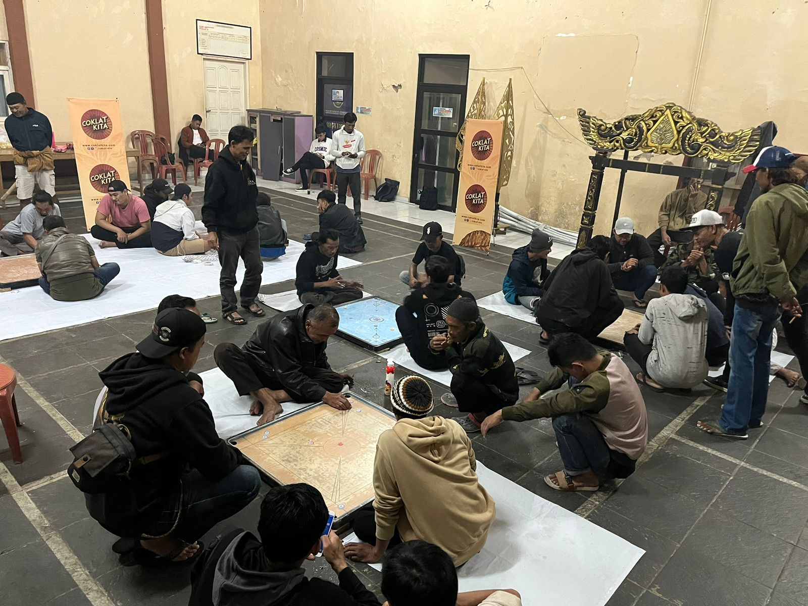
Brand ActivationCoklat Kita Silaturahmi 2024
Roadshow aktivasi pagelaran budaya dan silaturahmi warga di berbagai titik Jawa Barat dengan koordinasi terpadu panggung dan audiens.
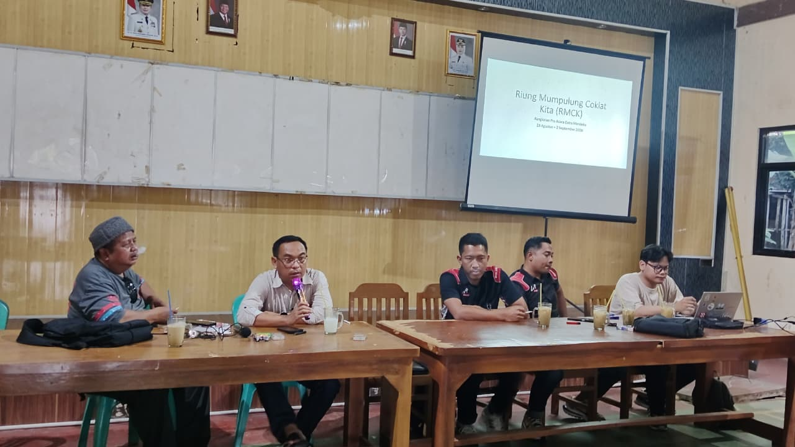
Brand ActivationCoklat Extra Merdeka 2026
Pesta rakyat kemerdekaan RI, festival perlombaan khas agustusan, bazar UMKM lokal, dan panggung hiburan interaktif masyarakat luas.
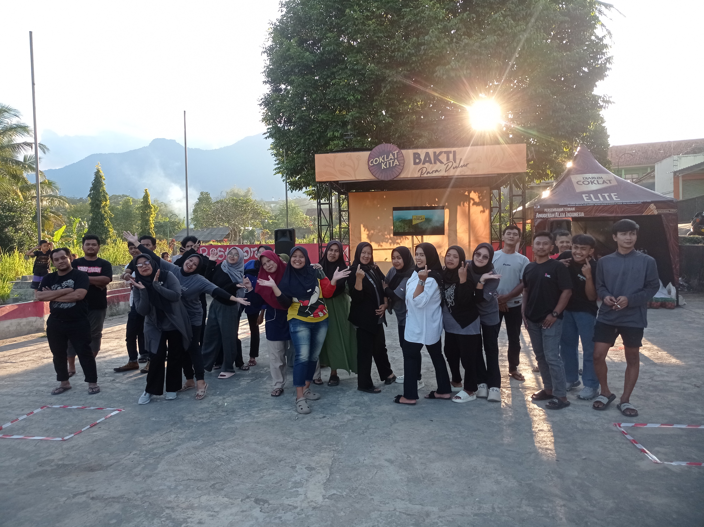
CSR & ActivationBakti Para Dulur Coklat
Program aksi bakti sosial dan pemberdayaan komunitas paguyuban warga Coklat Kita, merawat tali persaudaraan dan kepedulian lingkungan.
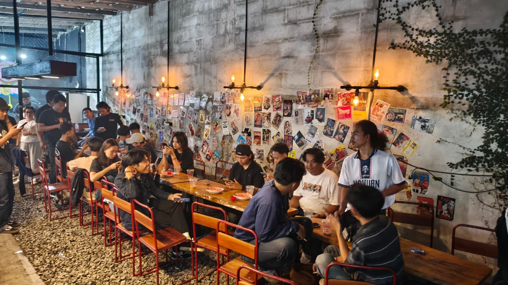
Community BrandMabes Heppiii 2026
Aktivasi titik kumpul komunitas Heppiii Community melalui panggung hiburan, nobar, game interaktif, dan engagement konsumen langsung.
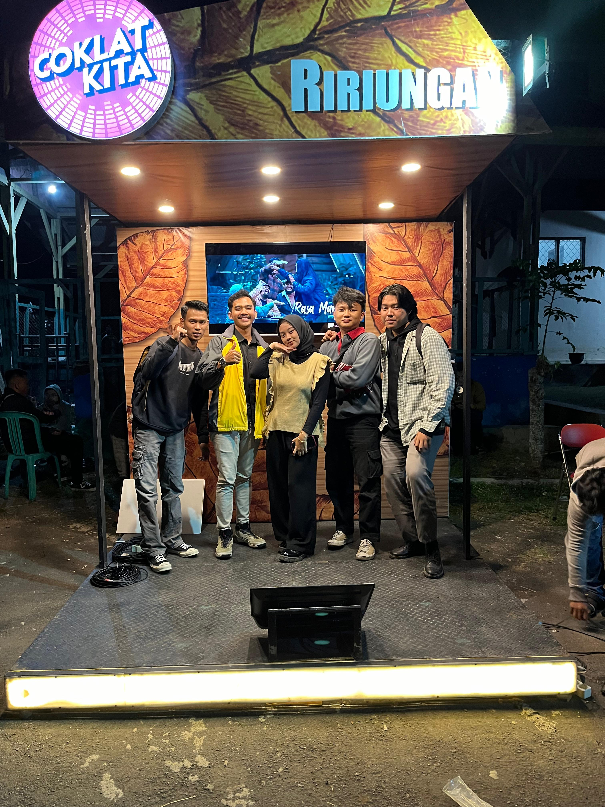
Community GatheringRiriungan Coklat Kita 2024
Pertemuan akbar ririungan pegiat seni dan budaya Pasundan dalam balutan kekeluargaan hangat dan pertunjukan kearifan lokal.
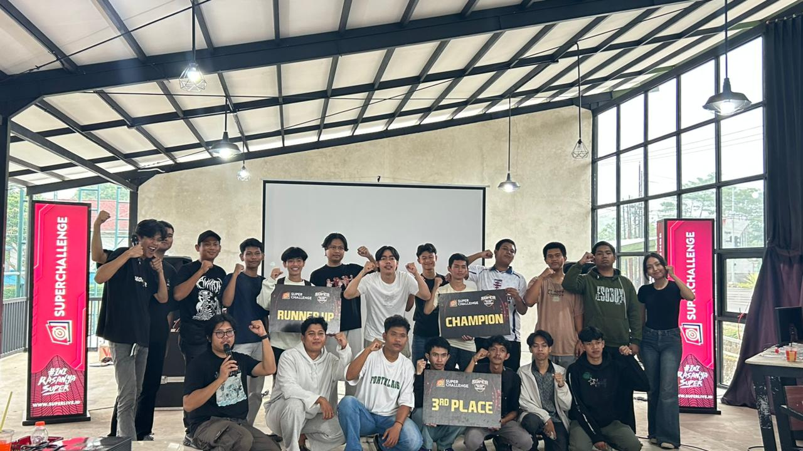
Turnamen EsportsSuper MLBB Esports 2026
Turnamen esports Mobile Legends bergengsi berkolaborasi dengan PB ESI Kuningan, multi-screen LED broadcast, dan live caster production.
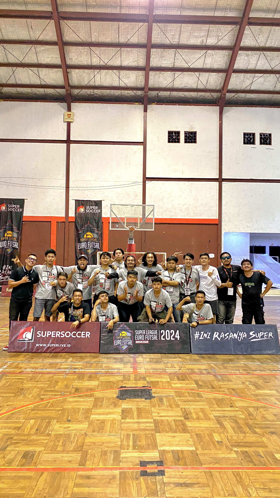
Turnamen OlahragaEuro Futsal Super Soccer 2024
Turnamen futsal kompetitif regional Kuningan dengan kepatuhan regulasi wasit nasional, tim medis darurat K3, dan antusiasme tribun suporter.
 Komunitas Urban
Komunitas Urban
76 Happy Skate Day Cirebon
Street parade dan kompetisi trick skateboard komunitas urban di Cirebon dengan instalasi obstacle rintangan dan pengawalan rute konvoi jalan raya.
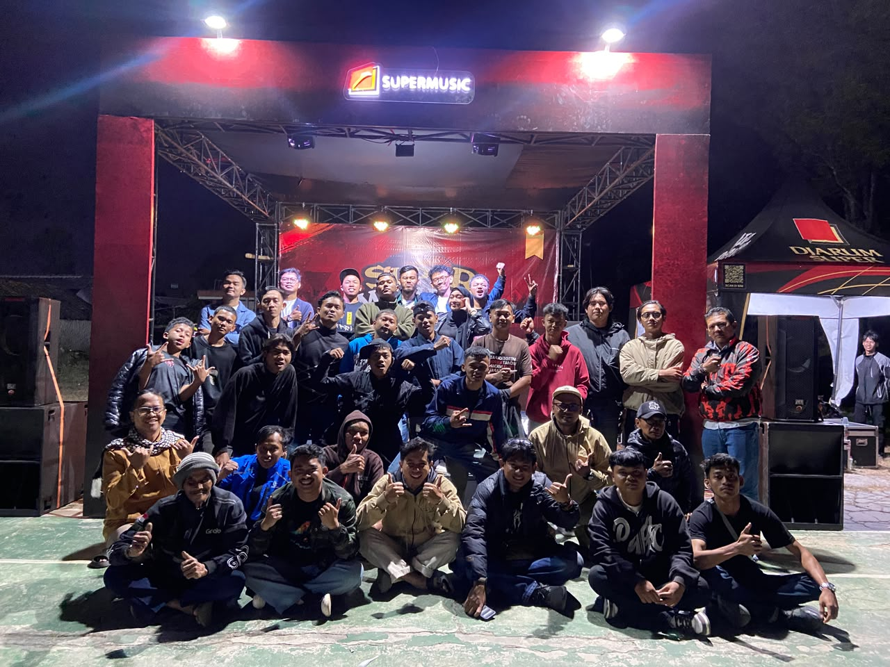
Komunitas OtomotifSuper Moment Citizen Across 2026
Temu akbar lintas komunitas otomotif, modifikator, dan pegiat kreatif dengan pameran show car, live performance, dan silaturahmi solid.
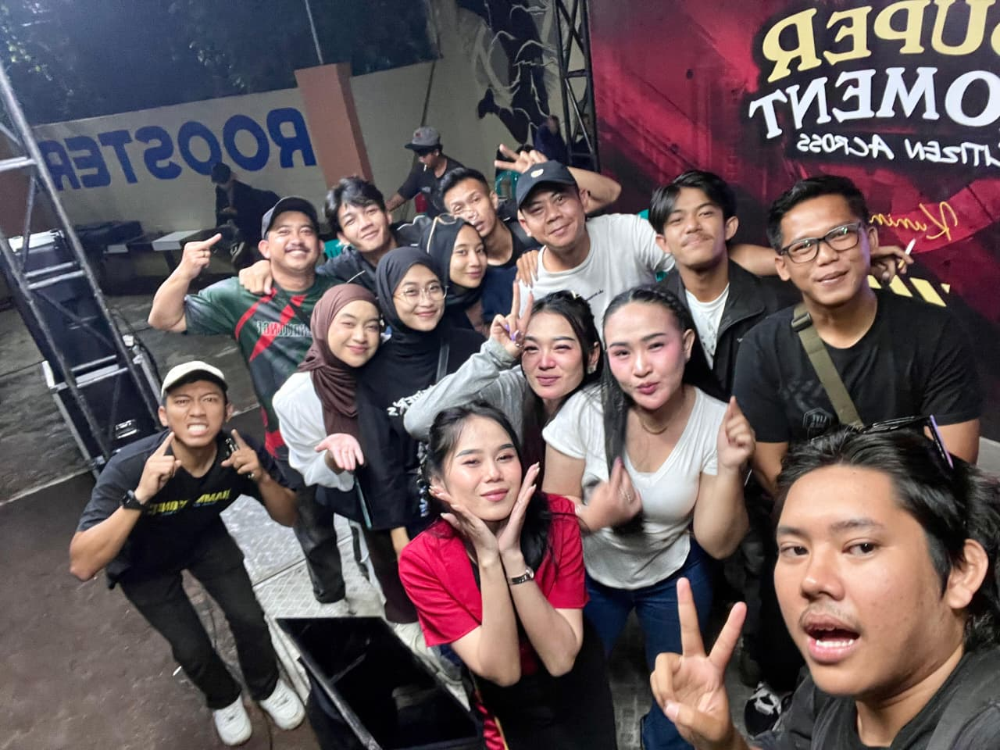
Komunitas KreatifSuper Moment Citizen Across 2025
Ajang perkumpulan riders dan subculture enthusiast yang memadukan riding bareng, diskusi karya, panggung akustik, dan pameran hobi.
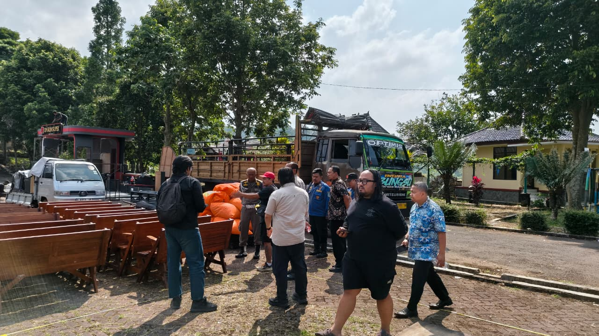
Subkultur PartyKecil Tapi Party 2026
Pesta subkultur komunitas kreatif alternatif dengan konsep intimate gigs, DJ set enerjik, pameran zine merchandise, dan suasana crowd intim.


/IMG-20240809-WA0046.jpg)